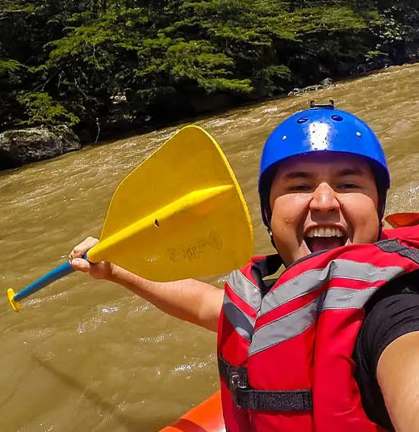

Our purpose is to connect people with Colombia's extraordinary rivers through exciting adventures that inspire exploration, respect for nature, and appreciation for local communities. Our mission is to provide safe, unforgettable whitewater experiences while promoting environmental conservation and responsible tourism. We believe adventure brings us closer to nature. We believe every river has a story and every journey creates a connection. Our creed is to explore with courage, respect nature, and celebrate Colombia's beauty. Ride the Rapids. Discover Colombia!